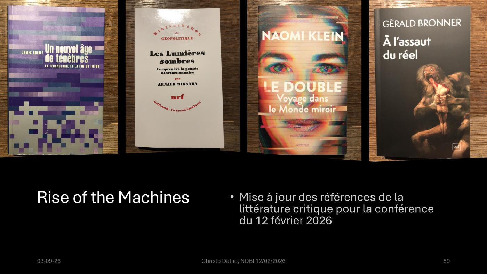

DIAPOSITIVES 87 à 91
L’auteur renvoie à son propre exposé de l’an dernier — et met sa bibliographie à jour.
L’exposé consacre deux diapositives à renvoyer à la conférence donnée un an plus tôt, jour pour jour ou presque, au Café Philo Rencontres & Progrès : Rise of the Machines — IA, machine learning, réseaux neuronaux, LLM, chatbots… L’intelligence artificielle entre peurs et démystification, présentée au Carpe Diem le 23/2/2025.
La présentation sur Slideshare.
Le geste est notable : plutôt que de refaire l’introduction technique, l’exposé de 2026 y renvoie. C’est ce qui lui permet d’attaquer directement l’éthique — et c’est pourquoi ce troisième deck ne contient presque aucune définition.
Une diapositive est consacrée à la mise à jour des références de la littérature critique pour la conférence du 12 février 2026. Quatre ouvrages :

| Titre | Ce qu’il apporte à l’exposé |
|---|---|
| James Bridle, Un nouvel âge de ténèbres. La technologie et la fin du futur | L’opacité comme condition contemporaine — écho direct à la fiche 11. |
| Arnaud Miranda, Les Lumières sombres. Comprendre la pensée néoréactionnaire (nrf) | La généalogie du courant « Lumières sombres » cité en fiche 14 — Yarvin, Land, Thiel. |
| Naomi Klein, Le Double. Voyage dans le Monde miroir | Le dédoublement identitaire à l’ère des plateformes. |
| Gérald Bronner, À l’assaut du réel | L’économie de l’attention et la dérégulation cognitive. |
Socialter no 73, décembre 2025 – janvier 2026 — « IA : Et si on débranchait ? »
Manière de voir — trois numéros cités :
Le « droit au non-numérique » de Socialter est la seule proposition, dans tout l’exposé, qui réponde directement à la fracture numérique de la fiche 17 : non pas former les 40 % à l’outil, mais leur reconnaître le droit de s’en passer sans perdre l’accès aux services.